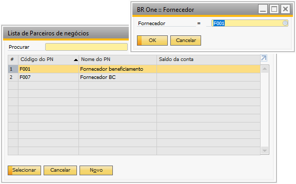
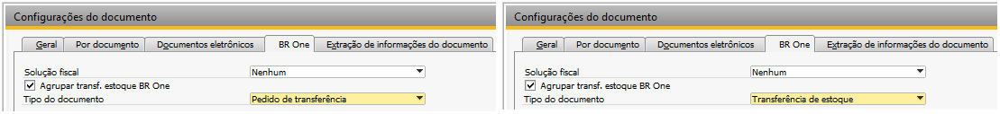

Processo de Remessa
Para iniciar o processo é necessário a criação de uma ordem de produção.
No cabeçalho da OP o depósito é obrigatório ser de terceiro.
Com a OP liberada, temos três opções para enviar a remessa:
Enviar para assistente de remessa;
Gerar NF de remessa;
Vincular Remessa Avulsa.
{kind=link}
Enviar para assistente de remessa
Botão direito na Ordem de produção, selecionar a opção Enviar para assistente de remessa, o sistema abrirá uma tela, apenas para informativo do processo.

Na sequência abrirá uma nova tela BR One :: Assistente de remessa para seleção dos componentes e suas respectivas quantidades.

Para acessar a tela é necessario ir ao menu:
Produção -> Beneficiamento -> Compras -> Assistente de remessa
Quando uma Ordem de Produção possuir mais de um item de serviço, todos eles serão listados no assistente de remessa. Ao selecionar um item de serviço o BR One selecionará automaticamente as demais linhas correspondentes da mesma Ordem de Produção.

Ao gerar os documentos através do assistente de remessa o sistema mostrará uma mensagem informando que irá atualizar os depósitos da ordem de produção para o padrão cadastrado no fornecedor.
{kind=link}
{kind=link}
{kind=link}
Documentos gerados, estão detalhados abaixo no tópico Documentos gerados para remessa.
Gerar NF de remessa
Pela opção de Gerar NF de remessa, o add-on abrirá uma tela BR One :: Seleção de componentes para remessa para que possa ser informado a quantidade que será enviada para o fornecedor. Caso tenha mais de um item serviço, todos serão levados para Pedido de compra.
{kind=link}
Documentos gerados, estão detalhados abaixo no tópico Documentos gerados para remessa.
Assistente de remessa avulsa
Na tela BR One :: Assistente de remessa avulsa devemos selecionar o fornecedor que participará do processo de beneficiamento. Na tela Lista de Parceiros de negócios, só serão exibidos os parceiros de negócios conforme Configuração Cadastro Parceiro de Negócio (Fornecedor).
Após selecionar o fornecedor, deve selecionar uma filial e os componentes estocáveis, que fazem parte do beneficiamento de compra com a quantidade desejada e gerar a remessa. Após gerar deve ser vinculado na Ordem de Produção.
{kind=link}
{kind=link}
Documentos gerados, estão detalhados abaixo no tópico Documentos gerados para remessa.
Vincular remessa avulsa
Para realizar um vínculo de remessa, é primordial gerar uma remessa pela tela “BR One :: Assistente de remessa avulsa” e após a remessa gerada é só realizar o vínculo na Ordem de Produção, com o botão direito do mouse, opção Vincular remessa avulsa.
{kind=link}
Uma nova tela aparecerá para selecionar Devolução de Mercadoria ou Dev. Nota Fiscal de Entrada, conforme sua configuração na tela de configuração de beneficiamento.
{kind=link}
Deve informar as linhas do documento da remessa.
{kind=link}
Após as linhas inseridas deve preencher o campo Qtde. alocada na aba Documentos -> Compras/OP.
{kind=link}
Documentos gerados para remessa
Ao gerar a remessa através da opção Enviar para assistente de remessa e Gerar NF de remessa é adicionado o documento de Pedido de Compra para os itens de serviço do roteiro, com a utilização recuperada da tela BR One :: Configuração de beneficiamento, do campo Utilização de Serviço.
O campo Depósito do pedido de compra é o mesmo depósito informado na linha do componente de serviço da Ordem de produção.
{kind=link}
Na tela de BR One :: configurações de beneficiamento o parâmetro Gerar NF de entrada e dev.de NF de entrada, vai definir qual documento será usado para a remessa e o retorno, segue abaixo as opções:
Desmarcado: Remessa usará documento de Devolução de mercadoria e no retorno usará documento de Recebimento de mercadorias.
Marcado: Remessa usará documento de Dev.Nota Fiscal de Entrada e no retorno usará documento de Nota Fiscal de Entrada.

O esboço de Devolução de Mercadoria ou Dev. Nota Fiscal de Entrada é gerado com os componentes estocáveis selecionados e quantidade informada na tela de BR One :: Seleção de componentes para remeessa, na remessa Código de imposto deve estar preenchido e esta informação vem da tela de Determinação do código de imposto, a utilização é recuperada do parâmetro Utilização de Materiais (REMESSA) da tela de BR One :: configurações de beneficiamento e o deposito é de envio direto. Antes de adicionar o documento, é necessário confirmar o preenchimento de todos os campos.
Ao adicionar o documento de remessa, será validado o parâmetro Gerar transferência de estoque por DI na tela BR One :: configurações de beneficiamento.
Caso esteja marcado, o sistema irá gerar e adicionar a transferência de estoque automaticamente por DI, caso esteja desmarcado o sistema abrirá a tela do Pedido de transferência de estoque/Transferência de estoque para que o usuário adicione o documento.
Caso ocorra algum erro ou inconsistência na geração do pedido/transferência, dentro do documento de Devolução de Mercadoria/Dev.Nota Fiscal de Entrada será possível reprocessar através do botão Operações > RTRF - Reprocessar
{kind=link}
Pedido de transferência/ Transferência de estoque
Após adicionar a Devolução de mercadoria ou Dev. Nota Fiscal de Entrada, o sistema abrirá automaticamente um Pedido de transferência de estoque ou uma Transferência de estoque, dependendo da configuração Tipo de Documento.
Essa transferência é realizada do depósito padrão do item para o deposito definido como padrão do fornecedor.
{kind=link}
{kind=link}
Importante salientar que caso a Transferência de Estoque da Devolução de mercadoria não esteja adicionada, a remessa não irá ficar disponível na tela de retorno de remessa.